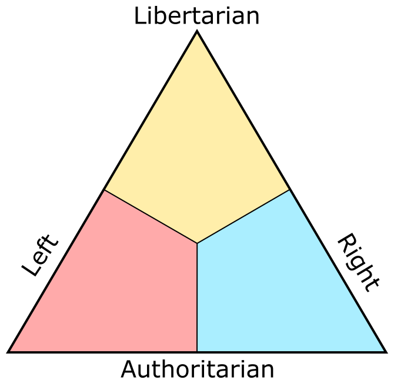

About the Political Triangle
The Political Triangle is a political test, inspired by the Political Compass, that plots you on a triangular axis between Libertarianism on the top, Leftism on the bottom-left, and Rightism on the bottom-right. It's based on the belief that Libertarianism is an inherently individualist ideology, mutually exclusive with both the left and right.
Those with higher "Libertarian" scores value individual liberty and free market Capitalism. Those with higher "Left" scores value equality and a socialist, command economy. Those with higher "Right" scores value moral purity and Nationalism.
